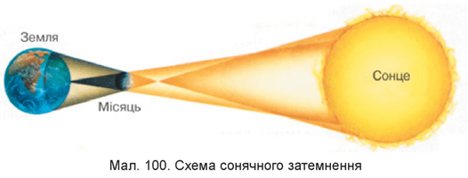

Затемнення Сонця
Сонце посилає нам світло і тепло, від нього залежить життя на Землі. Іноді воно дарує нам дивовижні, захоплюючі видовища. Наприклад, повне затемнення Сонця, надає унікальну можливість побачити корону з поверхні Землі. Це одне з найзахоплюючих небесних видовищ, які можна побачити на Землі.
Затемнення — астрономічне явище, коли одне небесне тіло тимчасово закриває світло від іншого небесного тіла.
Розрізняють три види сонячних затемнень:
Повне, часткове та кільцеве затемнення Сонця
Сукупність причин, які викликають затемнення Сонця
- Сонячні затемнення відбуваються тоді, коли тінь Місяця потрапляє на поверхню Землі, тобто, коли Місяць частково чи повністю закриває сонячний диск
- Затемнення Сонця відбуваються тільки під час нового Місяця
- Затемнення Сонця відбувається не в кожний новий місяць, а лише тоді, коли орбіта Місяця перетинається з екліптикою (шляхом, по якому рухається Сонце)
- Місяць у 400 разів менший, ніж Сонце, проте він ближче до нас ніж Сонце, теж у 400 разів
- Видимий диск Сонця дорівнює видимому диску Місяця

Таке співвідношення розмірів та відстаней цих космічних тіл дає можливість землянам спостерігати різні види затемнення Сонця. Під час повної фази Сонячного затемнення, яке триває лише декілька хвилин, небо стає темним, а навколо чорного сонячного диску простягаються промені сонячної корони.
Сонячне затемнення, як повне видно лише там, де на Землю падає пляма повної місячної тіні. Діаметр плями не перевищує 250 км, тому одночасно повне затемнення Сонця видно тільки на малій ділянці Землі. Повне затемнення відбувається коли Місяць повністю перекриває диск Сонця, при цьому можна спостерігати сонячну корону [5].
Часткове – коли місячна тінь закриває лише частину сонячного диску.
Місяць буває в перигеї – ближче до Землі, в цей час його кутові (видимі) розміри більші, тоді можливе повне затемнення Сонця. Коли Місяць розташовується найдальше від Землі -в апогеї, його кутові розміри менші. В цей час його повна тінь не досягає поверхні Землі. За сприятливих умов в такий момент можливе кільцеве затемнення Сонця.
Доведено, що Місяць поступово віддаляється від нашої планети зі швидкістю приблизно 4 см на рік. Тому менш ніж за 600 млн. років, кутові розміри Місяця зменшаться і повне затемнення Сонця стане неможливим, при цьому будуть спостерігатися лише часткові і кільцеподібні затемнення.